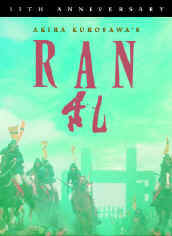

|

|
|
The Golden Bowl has been cited as an ISF Reference
DVD.
Click the ISF image for the complete list of ISF cited DVDs. |
CURRENT DVD REVIEWS |
| Love Me Tender/ C+, B+ |
| Flaming Star/ B, B |
| Charlotte Gray (SE)/ B+, A- |
| John Q. (SE)/ D+, A- |
| Say Anything (SE)/ B+, B |
| Man of the Century (SE)/ B+, A- |
| Collateral Damage (SE)/ C+, A- |
| S.O.B./ C+, B+ |
| Skin Deep/ C+, B |
| Two Family House/ B, B+ |
| Charlie's Angels (SE)/ C, B+ |
| Victor/Victoria (SE)/ A,B+ |
| Great Race, The/ B+, B+ |
| Lagaan/ C, C+ |
| Circus (SE)/ C+, A |
| To Gillian on Her 37th
Birthday/ B-, C+ |
| Audition (SE)/ A-,B |
| Kansas City Confidential/ B, C- |
| Amélie (SE)/ B+, A- |
| Big Heat, The/ B+, B+ |
| Fathom/ C+,C |
| Our Lady of the
Assassins/B+,B+ |
| Gosford Park (SE)/ A, A |
| Hombre/ B, B+ |
| Atlantic City/ A, A- |
| Monster's Ball (SE)/ B+, B+ |
| Majestic, The (SE)/ C+, A |
| Kate and Leopold (SE)/ B, B+ |
| A Beautiful Mind (SE)/ A-,A |
| Witness for the Prosecution/
B+, B |
| Memento (SE)/ A, A |
| Harry Potter and the
Sorcerer's Stone (SE)/ B+, A |
| Sorry, Wrong Number/ B, B |
| Key Largo/ A-, A- |
| Vanilla Sky (SE)/ C+, A |
| My First Mister (SE)/ B, B+ |
| Bite the Bullet/ B, C+ |
| Bob Le Flambeur (SE)/ A-, B |
| Black Knight (SE)/ C, A- |
| Vikings, The (SE)/ B, B |
| Ali/ B, A- |
| Gambler, The (1974)/ B+, B- |
| Fatal Attraction (SE)/ B+, B |
| It
Came From Outer Space (SE)/ B, B+ |
| Requiem for a Heavyweight/ B+,B+ |
| Calamity Jane/ A-, B+ |
| Barcelona (SE)/ A-, B |
| Cowboy/ B, C |
| Harvey Girls (SE)/ B+, B+ |
| Serendipity (SE)/ B, B+ |
| Texas Rangers/ C+, C+ |
| Dancing at the Blue Iguana (SE)/ C+, A- |
| Domestic Disturbance (SE)/ C, B+ |
| Bread and Tulips/ B+, B+ |
| Behind Enemy Lines (SE)/ B-, A |
| Metropolis (Anime) SE/ B, B |
| Accused, The/ B+, B+ |
| Projectionist, The/ C+, C+ |
| Tall Guy, The/ B+, B |
| Life on a String/ B+, D- |
| Mulholland Dr./ B+, B+ |
| Omaha (SE)/ C+, D |
| Life as a House (SE)/ B-,B |
| Spy Game (SE)/ B-,A |
| Sexy Beast (SE)/ B+, A- |
| Party, The/ B, C |
| Fresh (SE)/ A-, A- |
| Eat, Drink, Man, Woman/ B+, A- |
| K-Pax (SE)/ B+, A |
| Strictly Ballroom (SE)/ A-, B+ |
| Training Day (SE)/ B+, A (F) |
| Purple Noon/ B+, C+ |
|


Films on Disc has been sited by Classic Movies as one of their
Best New Links.

The editors of Britannica.com have selected Films on Disc as one of
the best on the Internet when reviewed for quality, accuracy of
content, presentation and usability.
© 2002 Films on
Disc
Stuart J. Kobak
ALL RIGHTS RESERVED. |
|
|
| |
|
Films
on Disc Internet Magazine includes DVD reviews and DVD feature
articles, plus Film, Movie Poster and DVD Links.
Films
on Disc
The
Ultimate DVD Review Site
Front
Cover
July-August 2000
Last
Update
August 17, 2002
In this issue......

The
Return of an Epic
Awesome
news for movie lovers. Winstar Cinema is releasing
Akira Kurosawa's epic masterpiece Ran to
theaters around the country beginning August 18. The
release prints have been struck from pristine
elements stored by producer Serge Silberstein in
Paris. Ran is one of the most strikingly
photographed films ever made. The magnificent battle
scene compositions are filmed with the majesty of a
great master. Don't miss an opportunity to see Ran
in theaters in all it's original widescreen glory.
Click on
the Ran poster to visit Winstar's site for a
great profile of the movie including pictures and
production history. You can also check out The
Epic Images of Kurosawa for Stu
Kobak's take on Ran and several other
masterworks by the great Japanese director.
|

Check here for recommended
new releases coming on DVD. Updated frequently.
June
28, 2000
June
21, 2000
Click
for More DVD Alerts

Click on
the DVD MIA symbol for profiles of DVDs missing in action.
Add films to the DVD
MIA Master List by
filling out a simple form. Click
Here
|
|
|
|

Selections
from the feature archive include
articles on
Akira
Kurosawa, Frank
Darabont,
Blonde
Bimbos,
Hollywood
Street Gangs,
or
Vietnam:
The Hollywood Pariah,
and many more....
Epic
Images of Kurosawa

Click on the image above for as original view of Akira
Kurosawa's work

Need
a daily fix of movie quotes. Reel Quotes Newsletter has
the answer. Click on the Reel Quotes symbol symbol for more.

The
Movie Poster Archive include extensive poster images from the
films of stars like Susan Hayward, Kirk Douglas, Katharine
Hepburn and many more. This month's featured star is William
Holden.

 Home
Theater Talk
is giving away a subwoofer and outboard amp Sunday at high noon. Home Theater Talk
is guided by the inimitable style of enthusiast Mike Knapp. Friendly atmosphere and
knowledgeable folks are the secret
ingredients. Home
Theater Talk
is giving away a subwoofer and outboard amp Sunday at high noon. Home Theater Talk
is guided by the inimitable style of enthusiast Mike Knapp. Friendly atmosphere and
knowledgeable folks are the secret
ingredients.
 Gary
Morris's insightful publication Bright Lights Film Journal
turns the celluloid in films from a unique perspective. Click on the image above for more pure movie views. Gary
Morris's insightful publication Bright Lights Film Journal
turns the celluloid in films from a unique perspective. Click on the image above for more pure movie views.
 
The Big Combo
has style to spare in reviewing films and producing feature
articles. Check out their special "Lingo" section.

Reviews of affordable remote
controls in the market place. Codes and tips as well.

Cyber Theater
is an outstanding source for accurate video information.
Check out their 16 x 9 format guide for a thorough understanding
of DVD encoded that way.

Reliable and friendly DVD sales service has been a hallmark of Digital
Eyes for more than three years. Home to Robert
(Obi) George's DVD reviews.

DVD King does
the retail thing these days selling DVDs.

Looking for information about
widescreen movies and hardware. The
Widescreen Movie Center is the place to go.

Ask Digital Man
is the web's only 24-hour, totally FREE source for all your home
theater, DVD, Dreamcast, PC, and Networking tech support needs!

Venerable electronics industry
magazine with excellent online selections from their hard book.
|
|